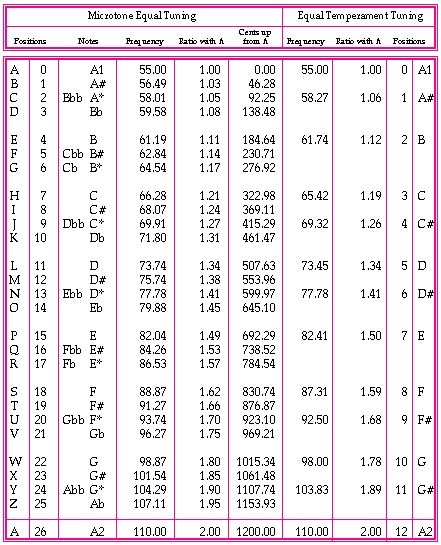

The method of assigning pitches to the alphabet was explained in Chapter I of this document. This method was applied to microtones by dividing one octave into twenty-six microtones, with the "Diatonic Equal Tuning"2 system. In any such system, the interval relationships between notes is unchanged in moving from one key to another. The microtone frequencies were derived from A1 = 55 Hz. The table below describes the alphabet, musical notes, frequency (Hertz), ratio, and size of interval in cents (100 cents = 1 semitone ).
2. Blackwood, Easly. The Structure of Recognizable Diatonic Tunings. New Jersey: Princeton University Press, 1985, p. 221.
Example 1: 26 Note Microtone and 12 note Equal Temperament Tables.
